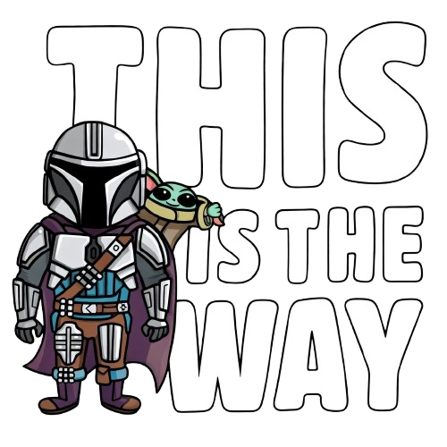

Roles & Responsibilities
Đội ngũ fullstack/senior cross-functional — hỗ trợ kỹ thuật chuyên sâu, dẫn dắt đổi mới công nghệ và nâng cao năng lực toàn diện cho Delivery Center.
Khám phá ngay ↓Tổng quan
Sứ mệnh

Nâng cao năng lực tổng thể của Delivery Center thông qua hỗ trợ kỹ thuật chuyên sâu, dẫn dắt đổi mới công nghệ, và đảm bảo chất lượng đầu ra ở mức cao nhất cho khách hàng.
Trách nhiệm chính
6 lĩnh vực trách nhiệm cốt lõi định nghĩa hoạt động và giá trị mà Solution Team mang lại.
Nguyên tắc hoạt động
Các nguyên tắc định hướng cách Solution Team vận hành và phối hợp với toàn bộ tổ chức.
Để tránh conflict với các bộ phận khác trong công ty:
Vai trò
Trách nhiệm cụ thể của từng vai trò trong Solution Team.
Phối hợp
Quy trình phối hợp chính thức với các bộ phận trong tổ chức.
Lộ trình
Lộ trình phát triển 3 giai đoạn — từ technical excellence đến cross-functional leadership.
Tập trung vào Technical — hỗ trợ kỹ thuật, proposal, presale, R&D.
Khi mở rộng sang mảng PM, team sẽ bổ sung thêm trách nhiệm:
Mở rộng cover các mảng khác: QA process, BA methodology, Design system, DevOps practices, v.v. Chi tiết sẽ được bổ sung khi đến giai đoạn triển khai.